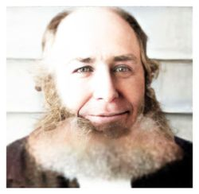
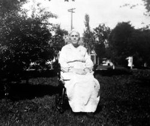
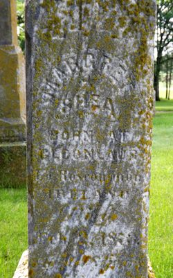
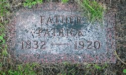
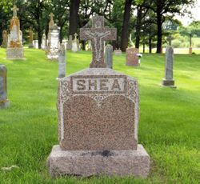

By Katherine Bonner
The purchase price included land, the log house, a stable, and a building used as a granary. The Homestead Act of 1862 made possible the settlement of this fertile land in the midwest. Every American citizen could obtain title to the land after settling it for five years and making improvements. Patrick was very proud to own the homesteaded claim as England would not let them own land in Ireland.
Patrick Shea
Patrick had three brothers and seven sisters, as follows: Brothers - Michael, Thomas,and Richard; and Sisters - Mrs. Nell Shea Noonan, Mrs. Matte Shea Carney, Mrs. Hyland, Mrs. Rattigan, Mrs. Canarton, Mrs. Kenney, and Mrs. Costello. He was the only on of his immediate family to leave Ireland so he never saw them again. His daughter, Mary, planed to take him back to Ireland for a visit but then her husband Jack Conway, a Great Northern Railroad engineer, was killed and that was the end of the plans. (His daughter, Margaret Shea Kehoe, was the only on one of his 14 children ever to visit Ireland which she did twice - in 1959 and 1972.)
A niece, Elizabeth Shea Delaney, daughter of his brother Thomas, and her husband Timothy and two children - Catherine (Kindregan) and Thomas Delaney - visited the farm in 1919. We have kept in touch with the Delaneys through the years at their homes in Philadelphia.
In addition to the three daughters born to Patrick and Margaret in Ireland, two more daughters were born in leaf Valley - Elizabeth and Anne. Soon after the baby, Anne, was born Margaret died of Pneumonia on February 2, 1872, Mrs. Hubert Murrey who lived about one and one-half miles away took care of the two little girls in her home. On November 12, 1873 Patrick Shea and Catherine Mullins were married in Millerville, Minnesota in a log mission church; a priest came only every few months. Catherine was 27 years of age and Patrick was 43 - sixteen years older.
Catherine Mullins Shea
To this union, nine children were born - four daughters and five sons, as follows: Ellen, Richard, Catherine (Katy), John, Margaret, Thomas (Tom), Peter, William (Willy), and Frances. Patrick and Catherine also raised a boy, Johnny Edwards, from the State School in Owatonna. He ran away and Joined the Merchant Marine. When he came back to Minneapolis he was so sorry to hear that John Shea had died that he legally changed his name to John O'Shea. (Patrick had dropped the "O" when he came to this country.) John O'Shea was beloved by the family.
The last surviving member of the family, Frances Shea Donovan, died Jan. 8, 1990 at a Nursing Home in Minneapolis, Minnesota. Margaret Shea Kehoe had the longest life of anyone in the family. She was one hundred years and ten months old at death - Frances was eighty seven and eight months. Patrick Shea was survived by eleven of his fourteen children when he died on Jan. 28, 1920, Anne, John, and Peter preceded him in death. It is interesting to note that the Shea Farm was in the Shea name for eighty seven years. Mrs. William Shea (Minnie) sold it in 1957 to Wilmar Schultz.
Since England would not allow the Irish to be educated, these Hedge schools were held in secret places in the hedges. It as there, she said, that she got her education "at the knee of a Jesuit priest." She had a good education for that time and was well-read. That was particularly fortunate for her husband, Patrick, as he was unable to got to school and she therefore read and wrote for him.
There were many hardships in the new land. They were used to a mild climate in Ireland and Minnesota had great variances in weather - very hot and very cold. There was fear of the Indians - some groups came but left peaceably after being fed.
Margaret Kelly Shea grave
Life was very lonesome too, at times; they missed their families and friends and the social life they had with them. This group of twelve or so Irish families also had a language barrier with many of their neighbors - English was not a common language. Many times they walked or went by wagon the long five miles to Millerville and sat for a two-hour mass and never heard a word of English. Catherine Shea died at the age of ninety three years and six months at the home of her daughter, Margaret Shea Kehoe, in Alexandria, Minnesota where she lived for the last 23 years. Four of her nine children preceded her in death - Ellen (Sister Margaret Mary), John, Peter, and Richard. She was Born July 20, 1846 and died Jan. 31, 1940.
Patrick Shea grave
A quote from an American history book: "Shortly after the great potato famine in Ireland, 1846-1848, millions of Irish men and women migrated to the United States and Canada. By 1858 two million had fled and by the end of the century the number had increased to four million. The exodus, one of the greatest migrations in history, reduced Ireland's populations by one half." The Shea-Mullins families were a part of that exodus! Catherine's parents are buried in Millerville, Minn. Michael Mullins, her father died in 1877 and her mother died Dec. 28, 1885. (Ellen Noonan Mullins)
Shea Memorial Stone